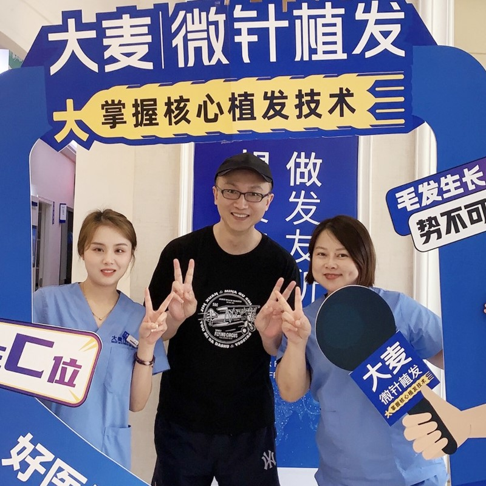

Advanced Microneedle Technology | 14 National Patents | 31 Branches Nationwide | 100+ Expert Doctors
Comprehensive solutions for all types of hair loss with advanced microneedle technology
Personalized hairline design for natural results that closely match your facial features, using advanced microneedle technology to restore a youthful appearance.
Learn MorePrecision microneedle implantation increases density while maintaining natural growth direction, achieving higher density implantation for thicker, fuller hair.
Learn MoreComprehensive restoration for all stages of crown baldness, using our patented microneedle technology to achieve natural coverage results.
Learn MoreNatural-looking eyebrow restoration with precision implantation designed to closely match your facial aesthetics, bringing fullness and dimension.
Learn MoreArtistic implantation creates an ideal beard or mustache, filling sparse areas to create a masculine look that closely complements your features.
Learn MorePrecision implantation to restore or enhance your sideburns, creating natural density and shape that closely frames your face.
Learn MoreMulti-site body hair transplantation with careful implantation ensuring natural growth direction and density for a highly realistic appearance.
Learn MoreComprehensive hair loss treatment including medication therapy, PRP treatment, and scalp care programs to prevent further hair loss and promote healthy growth.
Learn MoreProfessional hair care including personalized scalp care, nutritional therapy, and maintenance programs to support long-term hair health.
Learn MoreReal results from our satisfied patients. See the transformation for yourself.


Experienced specialists dedicated to your hair restoration journey

Medical Director
Deputy chief physician and medical director of Shanghai Barley Hair Transplant Hospital. Leads our many complex restoration cases with precision and artistry.

Senior Hair Transplant Physician
Over 20 years of surgical clinical experience, specializing in fine microneedle hair transplant techniques.

Hair Transplant Specialist
Advanced training at Wuhan Iron and Steel General Hospital and Union Hospital of Tongji Medical University.

Medical Director
18 years of surgical practice with solid basic medical knowledge and extensive clinical experience.
Real experiences from real patients around the world
"I thought the staff were very friendly and accommodating. They were quick and thorough with the preparations and the surgery, while long and uncomfortable was manageable because the doctors were very attentive to my pain levels and were relatively quick considering I had a very high follicle count. I really appreciate all of the staff's professionalism and courtesy!"
"I decided to have a hair transplant procedure after several years. The first experience was very positive, and Barley has been very considerate since then, from surgery to follow-up. The staff there communicates in English and is always willing to assist us, even if we have a simple question. Highly recommend them for their services."
"In 2020, I began my journey with Barley hospital. As my hair loss worsened, I tried everything on the market, but nothing worked. I decided to contact Barley for a consultation, despite my reservations because I had no prior experience with hair transplants. I had no idea what to expect or what the outcome would be. But Shaly was extremely helpful and patiently explained the entire process from beginning to end. I chose their Microneedle procedure, and after 5 months, my hair has recovered completely, even better than I expected. The doctors and nurses are extremely professional and provide high-quality care; I wholeheartedly recommend them."
"Thank you for following up on my hair situation after surgery. The end result is highly satisfactory. I am very pleased with my current hairstyle. I look years younger now. I told my friends about my experience and recommended it to them, and some of them also had their hair transplant at Barley; we're all expecting new surprises, and I'm waiting for their thank you."
"I'm extremely satisfied with my hair transplant at Barley. The results exceeded my expectations. The staff was professional and caring throughout the entire process. My hair looks completely natural, and I feel like a new person."
"After years of struggling with hair loss, I finally found Barley. The microneedle technique gave me effective results with minimal discomfort. The doctors were skilled and the results are satisfactory. Highly recommend!"
Our surgeons with satisfied patients after successful hair transplant procedures

Patient with Dr. Fang after procedure

Happy patient with restored confidence

Patient pleased with beard restoration

Quality results for female patient

Scar effectively concealed

Natural-looking eyebrow restoration

Complete crown coverage achieved

Maximum density results
14 national patents demonstrating our commitment to innovation


State-of-the-art facilities across 31 branches in China's major cities

Welcoming and comfortable environment

Confidential and professional consultations

Equipped with the latest medical technology

Relaxing environment for post-procedure care

Spacious and comfortable waiting area

State-of-the-art hair transplant technology
What to expect after your hair transplant procedure at Barley
Mild swelling and redness in the donor and recipient areas. Many patients can return to work within 3 days. Follow our detailed aftercare instructions for optimal healing.
Small scabs form around transplanted grafts and naturally fall off within 10 days. Transplanted hair may begin to shed - this is completely normal and expected.
Transplanted hair follicles enter a resting phase. The scalp heals completely. New hair growth begins to emerge around month 3-4.
New hair begins to grow visibly. You'll notice 30-40% of final results by month 6. Hair continues to thicken and mature naturally.
Full, natural-looking results are visible. Hair grows normally and can be styled, cut, and treated like your natural hair. Enjoy your restored confidence!
Answers to common questions about hair transplant at Barley
Hair transplant costs in China typically range from ¥10,000 to ¥50,000 ($1,400-$7,000 USD) depending on the number of grafts needed, the technique used, and the surgeon's expertise. At Barley, we offer competitive pricing with microneedle technology starting from ¥12,000. We provide free consultations to give you an accurate quote based on your specific needs.
Microneedle hair transplant is an advanced FUE technique that uses precision implanters (0.6-1.0mm diameter) to create minimal tissue damage. Unlike traditional forceps-based FUE, microneedle technology ensures 98%+ graft survival rates, allows higher density packing (up to 80 grafts/cm²), and results in faster healing with virtually no scarring. Barley holds 14 national patents for this technology.
Many patients return to normal activities within 3-5 days after surgery. The transplanted area may appear red for 7-10 days. New hair growth begins at 3-4 months, with full results visible at 9-12 months. During recovery, you'll receive detailed aftercare instructions and follow-up consultations to ensure optimal results.
Yes, hair transplant results are long-lasting. The transplanted hair follicles are taken from the donor area (back and sides of the head) which is genetically resistant to balding. Once transplanted, these follicles continue to grow naturally for a lifetime. At Barley, our 98%+ graft survival rate ensures long-lasting, natural-looking results.
The number of grafts needed depends on your hair loss stage and desired density. Typical ranges: Hairline restoration (1,500-2,500 grafts), Crown area (2,000-3,000 grafts), Full head restoration (3,000-5,000 grafts). During your free consultation at Barley, our experts will assess your donor area density and calculate the exact grafts needed for optimal results.
Schedule your free consultation today and take the first step towards a fuller, healthier head of hair
Everyone's hair loss journey and solution are unique due to a variety of factors. Our hair restoration experts will assist you in determining the root cause and a suitable solution for your hair restoration plan. If you have any questions, please ask; we are happy to assist.
15810155700
+86 13730143529
hairtransplant@qq.com